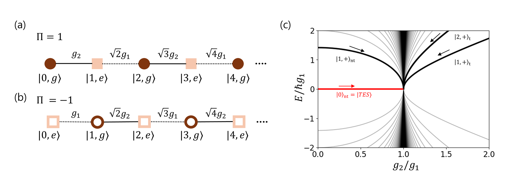

Abstract
- 1SAINT, SKKU Advanced Institute of Nanotechnology & Department of Nano Science and Technology, Sungkyunkwan University
- 2Sandia National Laboratories, Albuquerque, New Mexico 87123, USA
- 3Department of Physics, Korea University, Seoul 02841, Republic of Korea
- 4Department of Quantum Information Engineering, Sungkyunkwan University, Suwon, Gyeonggi, Republic of Korea
Trapped ions are a well-established platform for quantum simulation, offering precise control over both internal and motional degrees of freedom. Their internal spin states and quantized motion naturally represent spin and bosonic modes, making trapped ions well suited to simulating spin–boson systems. Independent control of the rotating and counter-rotating interactions further allows a wide range of spin–boson couplings to be realized experimentally. We investigate the anisotropic quantum Rabi model (AQRM), in which the coupled spin–motional states form a synthetic lattice that supports topological phenomena [1]. Both edge and bulk states in this model are localized, so identifying the topological edge state requires signatures beyond localization. We adiabatically prepare the eigenstates and measure both the spin and motional degrees of freedom, identifying the edge state through its chirality and near-complete spin–motion separability. The bosonic component of the edge state is squeezed, and phase-space measurements reveal up to 6.45 dB of squeezing. Controlling dissipation alongside coherent interactions would further broaden the scope of spin–boson quantum simulation. We are developing an optical system in which acousto-optic deflectors (AODs) steer the Raman beams and an optical-pumping beam is added downstream for state initialization. Combining this dissipative optical pumping with coherent Raman control will lay the groundwork for engineered dissipation and open-system quantum simulation.

- S. Lim et al., “Observation of a topological edge state among localized bulk states in the anisotropic quantum Rabi model,” arXiv:2609.34332 (2026).